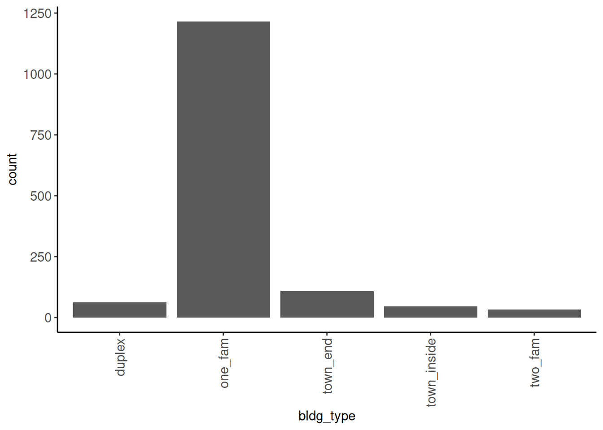
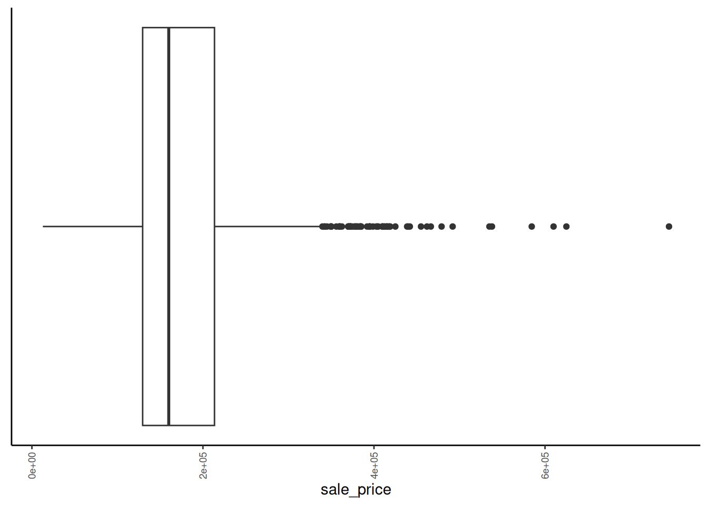
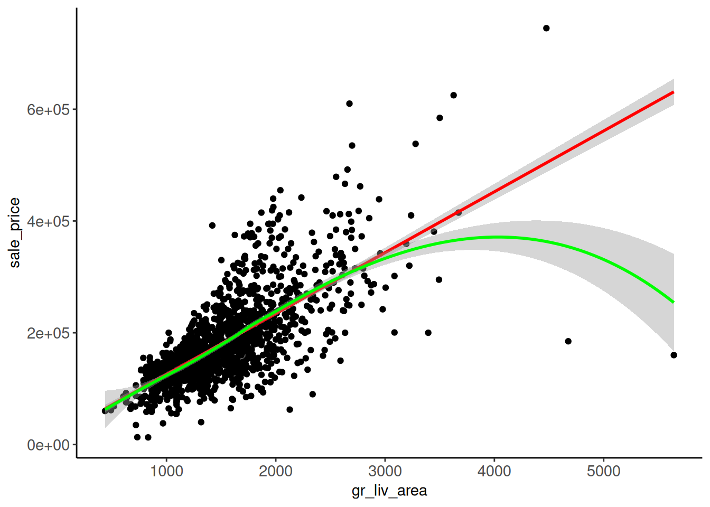
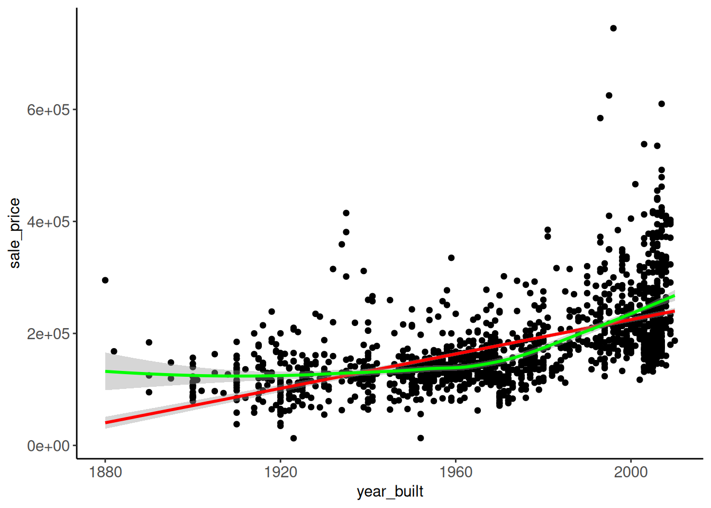
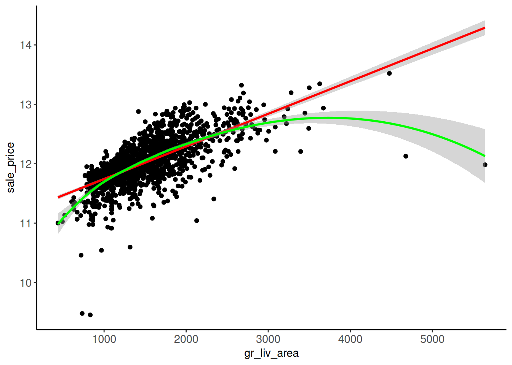

Code
options(conflicts.policy = "depends.ok")
devtools::source_url("https://github.com/jjcurtin/lab_support/blob/main/fun_ml.R?raw=true")
tidymodels_conflictRules()These are the main stages of data analysis for machine learning and the data that are used
EDA: Cleaning (full dataset)
EDA: Split data into training, validation and test set(s)
EDA: Modeling (training sets)
Model Development: Feature engineering (training sets)
Model Development: Fit many models configurations (training set)
Model Development: Calculate performance metric for many models configurations (validation sets)
Model Development: Select final/best model configuration based on performance metric (validation sets)
Final Model Evaluation: Fit best model configuration (use both training and validation sets)
Final Model Evaluation: Evaluate final model configuration using performance metric (test sets)
Implementation: Fit best model configuration to ALL data (training, validation, and test sets) if you plan to use it for applications.
The earlier stages are highly iterative:
You will NOT iterate back to earlier stages after you select a final model configuration in Stage 7
We generally store data as CSV [comma-separated value] files
read_csv() and write_csv()Exceptions include:
read_rds() and write_rds()See chapter 7 - Data Import in Wickham, Çetinkaya-Rundel, and Grolemund (2023) for more details and advanced techniques for importing data using read_csv()
We store and class variables in R based on their data type (level of measurement).
Coarsely, there are four levels:
We generally refer to nominal and ordinal variables as categorical and interval/ratio as quantitative or numeric
For nominal variables
read_csv())step_dummy() uses first level as reference).For ordinal variables:
step_dummy()step_ordinalscore()Similar EDA approaches are used with both nominal and ordinal variable
Ordinal variables may show non-linear relations b/c they may not be evenly spaced. In these instances, we can use feature engineering approaches that are also used for nominal variables
For interval and ratio variables:
Similar EDA approaches are used with both interval and ratio variables
Similar feature engineering approaches are used with both
You should always make a data dictionary for use with your data files.
Data dictionaries:
We will see a variety of data dictionaries throughout the course. Many are not great as you will learn.
We will use the Ames Housing Prices dataset as a running example this unit (and some future units and application assignments as well)
You can read more about the original dataset created by Dean DeCock
The data set contains data from home sales of individual residential property in Ames, Iowa from 2006 to 2010
The original data set includes 2930 observations of sales price and a large number of explanatory variables (23 nominal, 23 ordinal, 14 discrete, and 20 continuous)
This is the original data dictionary
The challenge with this dataset is to build the best possible prediction model for the sale price of the homes.
First, lets set up our environment with functions from important packages. I strongly recommend reviewing our recommendations for best practices regarding managing function conflicts now. It will save you a lot of headaches in the future.
tidymodels_conflictRules()) that sets conflict rules to allow us to attach tidymodels functions without conflicts with tidyverse functions.options(conflicts.policy = "depends.ok")
devtools::source_url("https://github.com/jjcurtin/lab_support/blob/main/fun_ml.R?raw=true")
tidymodels_conflictRules()Next we load packages for functions that we will use regularly. There are five things to note RE best practices
tidyverse, tidymodels), we attach the full packageinclude.only parameter to just attach those functions.packagename::functionname)janitor::clean_names()
cowplot package
kableExtra (which we use often), you will always need to exclude groups_rows() to prevent a conflict with dplyr package in the tidyverse
tidymodels_conflictRules() (see above)
We will also source (from github) two other libraries of functions that we use commonly for exploratory data analyses. You should review these function scripts (fun_eda.R; fun_plots.R to see the code for these functions.
devtools::source_url("https://github.com/jjcurtin/lab_support/blob/main/fun_eda.R?raw=true")
devtools::source_url("https://github.com/jjcurtin/lab_support/blob/main/fun_plots.R?raw=true")Finally, we tune our environment a bit more by setting plot themes and print options that we prefer
theme_set(theme_classic())
options(tibble.width = Inf, tibble.print_max = Inf)And we set a relative path to our data. This assumes you are using an RStudio project with the path to the data relative to that project file. I’ve provided more detail elsewhere on best practices for managing files and paths.
path_data <- "data"Lets read in the data and glimpse the subset of observations we will work with in Units 2-3 and the first two application assignments.
here::here() function. This is a replacement for file.path() that works better for both interactive use and rendering in Quarto when using projects.
col_types = cols() to let R guess the correct class for each column. This suppresses messages that aren’t important at this point prior to EDA.
glimpse() data after you read it.
Rows: 1,955
Columns: 81
$ PID <chr> "0526301100", "0526350040", "0526351010", "052710501…
$ `MS SubClass` <chr> "020", "020", "020", "060", "120", "120", "120", "06…
$ `MS Zoning` <chr> "RL", "RH", "RL", "RL", "RL", "RL", "RL", "RL", "RL"…
$ `Lot Frontage` <dbl> 141, 80, 81, 74, 41, 43, 39, 60, 75, 63, 85, NA, 47,…
$ `Lot Area` <dbl> 31770, 11622, 14267, 13830, 4920, 5005, 5389, 7500, …
$ Street <chr> "Pave", "Pave", "Pave", "Pave", "Pave", "Pave", "Pav…
$ Alley <chr> NA, NA, NA, NA, NA, NA, NA, NA, NA, NA, NA, NA, NA, …
$ `Lot Shape` <chr> "IR1", "Reg", "IR1", "IR1", "Reg", "IR1", "IR1", "Re…
$ `Land Contour` <chr> "Lvl", "Lvl", "Lvl", "Lvl", "Lvl", "HLS", "Lvl", "Lv…
$ Utilities <chr> "AllPub", "AllPub", "AllPub", "AllPub", "AllPub", "A…
$ `Lot Config` <chr> "Corner", "Inside", "Corner", "Inside", "Inside", "I…
$ `Land Slope` <chr> "Gtl", "Gtl", "Gtl", "Gtl", "Gtl", "Gtl", "Gtl", "Gt…
$ Neighborhood <chr> "NAmes", "NAmes", "NAmes", "Gilbert", "StoneBr", "St…
$ `Condition 1` <chr> "Norm", "Feedr", "Norm", "Norm", "Norm", "Norm", "No…
$ `Condition 2` <chr> "Norm", "Norm", "Norm", "Norm", "Norm", "Norm", "Nor…
$ `Bldg Type` <chr> "1Fam", "1Fam", "1Fam", "1Fam", "TwnhsE", "TwnhsE", …
$ `House Style` <chr> "1Story", "1Story", "1Story", "2Story", "1Story", "1…
$ `Overall Qual` <dbl> 6, 5, 6, 5, 8, 8, 8, 7, 6, 6, 7, 8, 8, 8, 9, 4, 6, 6…
$ `Overall Cond` <dbl> 5, 6, 6, 5, 5, 5, 5, 5, 5, 5, 5, 5, 5, 7, 2, 5, 6, 6…
$ `Year Built` <dbl> 1960, 1961, 1958, 1997, 2001, 1992, 1995, 1999, 1993…
$ `Year Remod/Add` <dbl> 1960, 1961, 1958, 1998, 2001, 1992, 1996, 1999, 1994…
$ `Roof Style` <chr> "Hip", "Gable", "Hip", "Gable", "Gable", "Gable", "G…
$ `Roof Matl` <chr> "CompShg", "CompShg", "CompShg", "CompShg", "CompShg…
$ `Exterior 1st` <chr> "BrkFace", "VinylSd", "Wd Sdng", "VinylSd", "CemntBd…
$ `Exterior 2nd` <chr> "Plywood", "VinylSd", "Wd Sdng", "VinylSd", "CmentBd…
$ `Mas Vnr Type` <chr> "Stone", "None", "BrkFace", "None", "None", "None", …
$ `Mas Vnr Area` <dbl> 112, 0, 108, 0, 0, 0, 0, 0, 0, 0, 0, 0, 603, 0, 350,…
$ `Exter Qual` <chr> "TA", "TA", "TA", "TA", "Gd", "Gd", "Gd", "TA", "TA"…
$ `Exter Cond` <chr> "TA", "TA", "TA", "TA", "TA", "TA", "TA", "TA", "TA"…
$ Foundation <chr> "CBlock", "CBlock", "CBlock", "PConc", "PConc", "PCo…
$ `Bsmt Qual` <chr> "TA", "TA", "TA", "Gd", "Gd", "Gd", "Gd", "TA", "Gd"…
$ `Bsmt Cond` <chr> "Gd", "TA", "TA", "TA", "TA", "TA", "TA", "TA", "TA"…
$ `Bsmt Exposure` <chr> "Gd", "No", "No", "No", "Mn", "No", "No", "No", "No"…
$ `BsmtFin Type 1` <chr> "BLQ", "Rec", "ALQ", "GLQ", "GLQ", "ALQ", "GLQ", "Un…
$ `BsmtFin SF 1` <dbl> 639, 468, 923, 791, 616, 263, 1180, 0, 0, 0, 637, 36…
$ `BsmtFin Type 2` <chr> "Unf", "LwQ", "Unf", "Unf", "Unf", "Unf", "Unf", "Un…
$ `BsmtFin SF 2` <dbl> 0, 144, 0, 0, 0, 0, 0, 0, 0, 0, 0, 1120, 0, 0, 0, 0,…
$ `Bsmt Unf SF` <dbl> 441, 270, 406, 137, 722, 1017, 415, 994, 763, 789, 6…
$ `Total Bsmt SF` <dbl> 1080, 882, 1329, 928, 1338, 1280, 1595, 994, 763, 78…
$ Heating <chr> "GasA", "GasA", "GasA", "GasA", "GasA", "GasA", "Gas…
$ `Heating QC` <chr> "Fa", "TA", "TA", "Gd", "Ex", "Ex", "Ex", "Gd", "Gd"…
$ `Central Air` <chr> "Y", "Y", "Y", "Y", "Y", "Y", "Y", "Y", "Y", "Y", "Y…
$ Electrical <chr> "SBrkr", "SBrkr", "SBrkr", "SBrkr", "SBrkr", "SBrkr"…
$ `1st Flr SF` <dbl> 1656, 896, 1329, 928, 1338, 1280, 1616, 1028, 763, 7…
$ `2nd Flr SF` <dbl> 0, 0, 0, 701, 0, 0, 0, 776, 892, 676, 0, 0, 1589, 67…
$ `Low Qual Fin SF` <dbl> 0, 0, 0, 0, 0, 0, 0, 0, 0, 0, 0, 0, 0, 0, 0, 0, 0, 0…
$ `Gr Liv Area` <dbl> 1656, 896, 1329, 1629, 1338, 1280, 1616, 1804, 1655,…
$ `Bsmt Full Bath` <dbl> 1, 0, 0, 0, 1, 0, 1, 0, 0, 0, 1, 1, 1, 0, 1, 0, 1, 0…
$ `Bsmt Half Bath` <dbl> 0, 0, 0, 0, 0, 0, 0, 0, 0, 0, 0, 0, 0, 0, 0, 0, 0, 0…
$ `Full Bath` <dbl> 1, 1, 1, 2, 2, 2, 2, 2, 2, 2, 1, 1, 3, 2, 1, 1, 2, 2…
$ `Half Bath` <dbl> 0, 0, 1, 1, 0, 0, 0, 1, 1, 1, 1, 1, 1, 0, 1, 0, 0, 0…
$ `Bedroom AbvGr` <dbl> 3, 2, 3, 3, 2, 2, 2, 3, 3, 3, 2, 1, 4, 4, 1, 2, 3, 3…
$ `Kitchen AbvGr` <dbl> 1, 1, 1, 1, 1, 1, 1, 1, 1, 1, 1, 1, 1, 1, 1, 1, 1, 1…
$ `Kitchen Qual` <chr> "TA", "TA", "Gd", "TA", "Gd", "Gd", "Gd", "Gd", "TA"…
$ `TotRms AbvGrd` <dbl> 7, 5, 6, 6, 6, 5, 5, 7, 7, 7, 5, 4, 12, 8, 8, 4, 7, …
$ Functional <chr> "Typ", "Typ", "Typ", "Typ", "Typ", "Typ", "Typ", "Ty…
$ Fireplaces <dbl> 2, 0, 0, 1, 0, 0, 1, 1, 1, 1, 1, 0, 1, 0, 1, 0, 2, 1…
$ `Fireplace Qu` <chr> "Gd", NA, NA, "TA", NA, NA, "TA", "TA", "TA", "Gd", …
$ `Garage Type` <chr> "Attchd", "Attchd", "Attchd", "Attchd", "Attchd", "A…
$ `Garage Yr Blt` <dbl> 1960, 1961, 1958, 1997, 2001, 1992, 1995, 1999, 1993…
$ `Garage Finish` <chr> "Fin", "Unf", "Unf", "Fin", "Fin", "RFn", "RFn", "Fi…
$ `Garage Cars` <dbl> 2, 1, 1, 2, 2, 2, 2, 2, 2, 2, 2, 2, 3, 2, 3, 2, 2, 2…
$ `Garage Area` <dbl> 528, 730, 312, 482, 582, 506, 608, 442, 440, 393, 50…
$ `Garage Qual` <chr> "TA", "TA", "TA", "TA", "TA", "TA", "TA", "TA", "TA"…
$ `Garage Cond` <chr> "TA", "TA", "TA", "TA", "TA", "TA", "TA", "TA", "TA"…
$ `Paved Drive` <chr> "P", "Y", "Y", "Y", "Y", "Y", "Y", "Y", "Y", "Y", "Y…
$ `Wood Deck SF` <dbl> 210, 140, 393, 212, 0, 0, 237, 140, 157, 0, 192, 0, …
$ `Open Porch SF` <dbl> 62, 0, 36, 34, 0, 82, 152, 60, 84, 75, 0, 54, 36, 12…
$ `Enclosed Porch` <dbl> 0, 0, 0, 0, 170, 0, 0, 0, 0, 0, 0, 0, 0, 0, 0, 0, 0,…
$ `3Ssn Porch` <dbl> 0, 0, 0, 0, 0, 0, 0, 0, 0, 0, 0, 0, 0, 0, 0, 0, 0, 0…
$ `Screen Porch` <dbl> 0, 120, 0, 0, 0, 144, 0, 0, 0, 0, 0, 140, 210, 0, 0,…
$ `Pool Area` <dbl> 0, 0, 0, 0, 0, 0, 0, 0, 0, 0, 0, 0, 0, 0, 0, 0, 0, 0…
$ `Pool QC` <chr> NA, NA, NA, NA, NA, NA, NA, NA, NA, NA, NA, NA, NA, …
$ Fence <chr> NA, "MnPrv", NA, "MnPrv", NA, NA, NA, NA, NA, NA, NA…
$ `Misc Feature` <chr> NA, NA, "Gar2", NA, NA, NA, NA, NA, NA, NA, NA, NA, …
$ `Misc Val` <dbl> 0, 0, 12500, 0, 0, 0, 0, 0, 0, 0, 0, 0, 0, 0, 0, 0, …
$ `Mo Sold` <dbl> 5, 6, 6, 3, 4, 1, 3, 6, 4, 5, 2, 6, 6, 6, 6, 6, 2, 1…
$ `Yr Sold` <dbl> 2010, 2010, 2010, 2010, 2010, 2010, 2010, 2010, 2010…
$ `Sale Type` <chr> "WD", "WD", "WD", "WD", "WD", "WD", "WD", "WD", "WD"…
$ `Sale Condition` <chr> "Normal", "Normal", "Normal", "Normal", "Normal", "N…
$ SalePrice <dbl> 215000, 105000, 172000, 189900, 213500, 191500, 2365…Dataset Notes:
Dataset has N = 1955 rather than 2930.
This full dataset has 81 variables. For the lecture examples in units 2-3 we will only use a subset of the predictors
You will use different predictors in the next two application assignments
Here we select the variables we will use for lecture
data_all <- data_all |>
select(SalePrice,
`Gr Liv Area`,
`Lot Area`,
`Year Built`,
`Overall Qual`,
`Garage Cars`,
`Garage Qual`,
`MS Zoning`,
`Lot Config` ,
1 `Bldg Type`) |>
glimpse()Rows: 1,955
Columns: 10
$ SalePrice <dbl> 215000, 105000, 172000, 189900, 213500, 191500, 236500,…
$ `Gr Liv Area` <dbl> 1656, 896, 1329, 1629, 1338, 1280, 1616, 1804, 1655, 14…
$ `Lot Area` <dbl> 31770, 11622, 14267, 13830, 4920, 5005, 5389, 7500, 100…
$ `Year Built` <dbl> 1960, 1961, 1958, 1997, 2001, 1992, 1995, 1999, 1993, 1…
$ `Overall Qual` <dbl> 6, 5, 6, 5, 8, 8, 8, 7, 6, 6, 7, 8, 8, 8, 9, 4, 6, 6, 7…
$ `Garage Cars` <dbl> 2, 1, 1, 2, 2, 2, 2, 2, 2, 2, 2, 2, 3, 2, 3, 2, 2, 2, 2…
$ `Garage Qual` <chr> "TA", "TA", "TA", "TA", "TA", "TA", "TA", "TA", "TA", "…
$ `MS Zoning` <chr> "RL", "RH", "RL", "RL", "RL", "RL", "RL", "RL", "RL", "…
$ `Lot Config` <chr> "Corner", "Inside", "Corner", "Inside", "Inside", "Insi…
$ `Bldg Type` <chr> "1Fam", "1Fam", "1Fam", "1Fam", "TwnhsE", "TwnhsE", "Tw…EDA could be done using either tidyverse packages and functions or tidymodels (mostly using the recipes package.)
We prefer to use the richer set of functions available in the tidyverse (and dplyr and purrr packages in particular).
We will reserve the use of recipes for feature engineering only when we are building features for models that we will fit in our training sets and evaluation in our validation and test sets.
Data leakage refers to a mistake made by the developer of a machine learning model in which they accidentally share information between their training set and held-out validation or test sets
Training sets are used to fit models with different configurations
Validation sets are used to select the best model among those with different configurations (not needed if you only have one configuration)
Test sets are used to evaluate a best model
When splitting data-sets into training, validation and test sets, the goal is to ensure that no data (or information more broadly) are shared between the three sets
In particular, if we begin to use test data or information about test during model fitting
Use snake case for variable names
clean_names() from janitor package is useful for this.rename()data_all <- data_all |>
clean_names("snake")
data_all |> names() [1] "sale_price" "gr_liv_area" "lot_area" "year_built" "overall_qual"
[6] "garage_cars" "garage_qual" "ms_zoning" "lot_config" "bldg_type" At this point, we should class all of our variables as either numeric or factor
where(is.numeric), where(is.factor))Subsequent cleaning steps are clearer if we have this established/confirmed now
We have a number of nominal or ordinal variables that are classed as character.
We have one ordinal variable (overall_qual) that is classed as numeric (because the levels were coded with numbers rather than text)
read_csv() thought was numeric by the levels are coded using numbersdata_all |> glimpse()Rows: 1,955
Columns: 10
$ sale_price <dbl> 215000, 105000, 172000, 189900, 213500, 191500, 236500, 1…
$ gr_liv_area <dbl> 1656, 896, 1329, 1629, 1338, 1280, 1616, 1804, 1655, 1465…
$ lot_area <dbl> 31770, 11622, 14267, 13830, 4920, 5005, 5389, 7500, 10000…
$ year_built <dbl> 1960, 1961, 1958, 1997, 2001, 1992, 1995, 1999, 1993, 199…
$ overall_qual <dbl> 6, 5, 6, 5, 8, 8, 8, 7, 6, 6, 7, 8, 8, 8, 9, 4, 6, 6, 7, …
$ garage_cars <dbl> 2, 1, 1, 2, 2, 2, 2, 2, 2, 2, 2, 2, 3, 2, 3, 2, 2, 2, 2, …
$ garage_qual <chr> "TA", "TA", "TA", "TA", "TA", "TA", "TA", "TA", "TA", "TA…
$ ms_zoning <chr> "RL", "RH", "RL", "RL", "RL", "RL", "RL", "RL", "RL", "RL…
$ lot_config <chr> "Corner", "Inside", "Corner", "Inside", "Inside", "Inside…
$ bldg_type <chr> "1Fam", "1Fam", "1Fam", "1Fam", "TwnhsE", "TwnhsE", "Twnh…We can the recode overall_qual first and set its levels
We can recode all the character variables to factor in one step. Most are nominal. We will handle the order for garage_qual later.
overall_qual was numeric and therefore sorts in the expected order. However, if it had been numbers stored as characters, it could sort incorrectly (e.g., 1, 10, 2, 3, …). And obviously if the orders levels were names, the order would have to be specified.
factor() to forcats::fct() because factor orders the levels alphabetically. Be aware that this could change if your code is used in a region of the world where this sorting is different. I still prefer this to the alternative (in fct()) that orders by the order the levels are found in your data.
Rows: 1,955
Columns: 10
$ sale_price <dbl> 215000, 105000, 172000, 189900, 213500, 191500, 236500, 1…
$ gr_liv_area <dbl> 1656, 896, 1329, 1629, 1338, 1280, 1616, 1804, 1655, 1465…
$ lot_area <dbl> 31770, 11622, 14267, 13830, 4920, 5005, 5389, 7500, 10000…
$ year_built <dbl> 1960, 1961, 1958, 1997, 2001, 1992, 1995, 1999, 1993, 199…
$ overall_qual <fct> 6, 5, 6, 5, 8, 8, 8, 7, 6, 6, 7, 8, 8, 8, 9, 4, 6, 6, 7, …
$ garage_cars <dbl> 2, 1, 1, 2, 2, 2, 2, 2, 2, 2, 2, 2, 3, 2, 3, 2, 2, 2, 2, …
$ garage_qual <fct> TA, TA, TA, TA, TA, TA, TA, TA, TA, TA, TA, TA, TA, TA, T…
$ ms_zoning <fct> RL, RH, RL, RL, RL, RL, RL, RL, RL, RL, RL, RL, RL, RL, R…
$ lot_config <fct> Corner, Inside, Corner, Inside, Inside, Inside, Inside, I…
$ bldg_type <fct> 1Fam, 1Fam, 1Fam, 1Fam, TwnhsE, TwnhsE, TwnhsE, 1Fam, 1Fa…skim() from the skimr package is a wonderful and customizable function for summary statistics
fun_eda.R function library that we use regularly. Here is the code but you can use the function directly if you sourced fun_eda.R (as we did above)skim_some <- skim_with(numeric = sfl(mean = NULL, sd = NULL, p25 = NULL, p50 = NULL, p75 = NULL, hist = NULL))Here is what we get with our new skim_some() function
skim_some() to confirm that we only have numeric and factor classesdata_all |>
skim_some()| Name | data_all |
| Number of rows | 1955 |
| Number of columns | 10 |
| _______________________ | |
| Column type frequency: | |
| factor | 5 |
| numeric | 5 |
| ________________________ | |
| Group variables | None |
Variable type: factor
| skim_variable | n_missing | complete_rate | ordered | n_unique | top_counts |
|---|---|---|---|---|---|
| overall_qual | 0 | 1.00 | FALSE | 10 | 5: 556, 6: 487, 7: 403, 8: 233 |
| garage_qual | 109 | 0.94 | FALSE | 5 | TA: 1745, Fa: 79, Gd: 16, Po: 4 |
| ms_zoning | 0 | 1.00 | FALSE | 7 | RL: 1530, RM: 297, FV: 91, C (: 19 |
| lot_config | 0 | 1.00 | FALSE | 5 | Ins: 1454, Cor: 328, Cul: 114, FR2: 55 |
| bldg_type | 0 | 1.00 | FALSE | 5 | 1Fa: 1631, Twn: 145, Dup: 77, Twn: 64 |
Variable type: numeric
| skim_variable | n_missing | complete_rate | p0 | p100 |
|---|---|---|---|---|
| sale_price | 0 | 1 | 12789 | 745000 |
| gr_liv_area | 0 | 1 | 438 | 5642 |
| lot_area | 0 | 1 | 1476 | 215245 |
| year_built | 0 | 1 | 1875 | 2010 |
| garage_cars | 1 | 1 | 0 | 4 |
skim_some() provides us with missing data counts and complete data proportions for each variable
data_all |>
skim_some() |>
1 select(skim_variable, n_missing, complete_rate)skim_some() returns a dataframe so you can select only the subset of columns to focus its output on what you want. Or just print it all!
# A tibble: 10 × 3
skim_variable n_missing complete_rate
<chr> <int> <dbl>
1 overall_qual 0 1
2 garage_qual 109 0.944
3 ms_zoning 0 1
4 lot_config 0 1
5 bldg_type 0 1
6 sale_price 0 1
7 gr_liv_area 0 1
8 lot_area 0 1
9 year_built 0 1
10 garage_cars 1 0.999You likely should view the full observation for missing values
We will show you a few methods to do this in your rendered output
print() will print only 20 rows and the number of columns that will display for width of page
options() if you will do a lot of printing and want full dataframe printedkbl() from kableExtra package for formatted tables (two methods below)Don’t forget that you can also use View() interactively in R Studio
Option 1 (Simple): Use print() with options()
1options(tibble.width = Inf, tibble.print_max = Inf)
data_all |> filter(is.na(garage_cars)) |>
print()head() or tail()
# A tibble: 1 × 10
sale_price gr_liv_area lot_area year_built overall_qual garage_cars
<dbl> <dbl> <dbl> <dbl> <fct> <dbl>
1 150909 1828 9060 1923 5 NA
garage_qual ms_zoning lot_config bldg_type
<fct> <fct> <fct> <fct>
1 <NA> RM Inside 1Fam Here are some more advanced options using kbl() for the df with many rows
kable() tables from knitr package and kableExtra extensions (including kbl()) are very useful during EDA and also final publication quality tableslibrary(kableExtra)Option 2 (more advanced): Use a function for kables that we created. Code is displayed here but the function is available to you if you source fun_eda.R from Github
height = "100%" if only printing a few rows.
Let’s use this function to see its output
data_all |> filter(is.na(garage_qual)) |>
print_kbl()| sale_price | gr_liv_area | lot_area | year_built | overall_qual | garage_cars | garage_qual | ms_zoning | lot_config | bldg_type |
|---|---|---|---|---|---|---|---|---|---|
| 115000 | 864 | 10500 | 1971 | 4 | 0 | NA | RL | FR2 | 1Fam |
| 128950 | 1225 | 9320 | 1959 | 4 | 0 | NA | RL | Inside | 1Fam |
| 84900 | 1728 | 13260 | 1962 | 5 | 0 | NA | RL | Inside | Duplex |
| 116500 | 858 | 7207 | 1958 | 5 | 0 | NA | RL | Inside | 1Fam |
| 76500 | 1306 | 5350 | 1940 | 3 | 0 | NA | RL | Inside | 1Fam |
| 76500 | 2256 | 9045 | 1910 | 5 | 0 | NA | RM | Inside | 2fmCon |
| 159900 | 1560 | 12900 | 1912 | 6 | 0 | NA | RM | Inside | 1Fam |
| 55000 | 1092 | 5600 | 1930 | 4 | 0 | NA | RM | Inside | 2fmCon |
| 93369 | 1884 | 6449 | 1907 | 4 | 0 | NA | C (all) | Inside | 1Fam |
| 94000 | 1020 | 6342 | 1875 | 5 | 0 | NA | RL | Inside | 1Fam |
| 136000 | 1832 | 10773 | 1967 | 4 | 0 | NA | RL | Inside | Duplex |
| 100000 | 1664 | 9825 | 1965 | 5 | 0 | NA | RL | Inside | Duplex |
| 90000 | 960 | 6410 | 1958 | 4 | 0 | NA | RL | Inside | 1Fam |
| 100000 | 1666 | 9839 | 1931 | 5 | 0 | NA | RL | Inside | 1Fam |
| 139000 | 1824 | 9400 | 1971 | 6 | 0 | NA | RL | Corner | Duplex |
| 76000 | 1092 | 1476 | 1970 | 4 | 0 | NA | RM | Inside | Twnhs |
| 75500 | 630 | 1491 | 1972 | 4 | 0 | NA | RM | Inside | TwnhsE |
| 88250 | 1092 | 1900 | 1970 | 4 | 0 | NA | RM | Inside | TwnhsE |
| 136000 | 1792 | 9000 | 1974 | 5 | 0 | NA | RL | FR2 | Duplex |
| 142000 | 1114 | 13072 | 2004 | 5 | 0 | NA | RL | Inside | 1Fam |
| 82500 | 708 | 5330 | 1940 | 4 | 0 | NA | RL | Inside | 1Fam |
| 129000 | 1464 | 9900 | 1910 | 5 | 0 | NA | RM | Corner | 1Fam |
| 94550 | 1701 | 7627 | 1920 | 4 | 0 | NA | RM | Corner | 2fmCon |
| 103000 | 1447 | 10134 | 1910 | 5 | 0 | NA | RM | Inside | 1Fam |
| 37900 | 968 | 5925 | 1910 | 3 | 0 | NA | RM | Inside | 1Fam |
| 113000 | 1452 | 4456 | 1920 | 4 | 0 | NA | RM | Inside | 2fmCon |
| 58500 | 816 | 3300 | 1910 | 4 | 0 | NA | C (all) | Inside | 1Fam |
| 34900 | 720 | 7879 | 1920 | 4 | 0 | NA | C (all) | Inside | 1Fam |
| 60000 | 800 | 6120 | 1936 | 2 | 0 | NA | RM | Inside | 1Fam |
| 62500 | 2128 | 3000 | 1922 | 5 | 0 | NA | RM | Inside | Duplex |
| 97500 | 1864 | 5852 | 1902 | 7 | 0 | NA | RM | Corner | 2fmCon |
| 70000 | 892 | 5160 | 1923 | 4 | 0 | NA | RM | Inside | 1Fam |
| 179000 | 1200 | 10800 | 1987 | 5 | 0 | NA | RL | Inside | Duplex |
| 179000 | 1200 | 10800 | 1987 | 5 | 0 | NA | RL | Inside | Duplex |
| 61000 | 904 | 10020 | 1922 | 1 | 0 | NA | RL | Inside | 1Fam |
| 118000 | 698 | 9405 | 1947 | 5 | 0 | NA | RL | Inside | 1Fam |
| 99900 | 864 | 4060 | 1922 | 5 | 0 | NA | RL | Corner | 1Fam |
| 119900 | 1678 | 10926 | 1959 | 5 | 0 | NA | RL | Inside | Duplex |
| 112000 | 833 | 8780 | 1985 | 5 | 0 | NA | RL | Corner | 1Fam |
| 141000 | 1080 | 7500 | 2004 | 7 | 0 | NA | RL | Inside | 1Fam |
| 106250 | 1294 | 10800 | 1900 | 4 | 0 | NA | RL | Inside | 2fmCon |
| 130000 | 1800 | 8513 | 1961 | 5 | 0 | NA | RL | Corner | Duplex |
| 120000 | 1027 | 5400 | 1920 | 7 | 0 | NA | RM | Inside | 1Fam |
| 95000 | 1080 | 5914 | 1890 | 5 | 0 | NA | RM | Inside | 1Fam |
| 65000 | 1588 | 12205 | 1949 | 3 | 0 | NA | RM | Inside | 1Fam |
| 129400 | 1540 | 6000 | 1905 | 5 | 0 | NA | RM | Corner | 1Fam |
| 160000 | 1984 | 8094 | 1910 | 6 | 1 | NA | RM | Inside | 2fmCon |
| 89500 | 1406 | 7920 | 1920 | 6 | 0 | NA | RM | Inside | 1Fam |
| 79900 | 1198 | 5586 | 1920 | 6 | 0 | NA | RM | Inside | 1Fam |
| 82375 | 1344 | 10320 | 1915 | 3 | 0 | NA | RM | Inside | 2fmCon |
| 127500 | 1355 | 10106 | 1940 | 5 | 0 | NA | RL | Inside | 2fmCon |
| 80000 | 1006 | 9000 | 1959 | 5 | 0 | NA | RL | Inside | 1Fam |
| 260000 | 1518 | 19550 | 1940 | 5 | 0 | NA | RL | Inside | 1Fam |
| 99600 | 864 | 9350 | 1975 | 5 | 0 | NA | RL | Inside | Duplex |
| 107500 | 1347 | 7000 | 1910 | 5 | 0 | NA | RL | Inside | 2fmCon |
| 79000 | 1096 | 9600 | 1924 | 6 | 0 | NA | RL | Corner | 1Fam |
| 85000 | 796 | 8777 | 1910 | 5 | 0 | NA | RL | Inside | 1Fam |
| 145900 | 2200 | 8777 | 1900 | 5 | 0 | NA | RL | Inside | Duplex |
| 82000 | 1152 | 6040 | 1955 | 4 | 0 | NA | RL | Inside | Duplex |
| 82000 | 1152 | 6012 | 1955 | 4 | 0 | NA | RL | Corner | Duplex |
| 118000 | 1440 | 12108 | 1955 | 4 | 0 | NA | RL | Inside | Duplex |
| 82500 | 1152 | 6845 | 1955 | 4 | 0 | NA | RL | Inside | Duplex |
| 91900 | 784 | 6931 | 1955 | 4 | 0 | NA | RL | Inside | 2fmCon |
| 120000 | 1053 | 12180 | 1938 | 5 | 0 | NA | RL | Inside | 1Fam |
| 96000 | 1137 | 8050 | 1947 | 5 | 0 | NA | RL | Inside | 1Fam |
| 98000 | 864 | 5604 | 1925 | 5 | 0 | NA | RL | Inside | 1Fam |
| 67000 | 864 | 8248 | 1914 | 3 | 0 | NA | RL | Inside | 1Fam |
| 135900 | 1716 | 5687 | 1912 | 5 | 0 | NA | RL | Inside | 2fmCon |
| 119000 | 1200 | 8155 | 1930 | 5 | 0 | NA | RM | Inside | 1Fam |
| 81000 | 630 | 1890 | 1972 | 4 | 0 | NA | RM | Inside | Twnhs |
| 146000 | 1100 | 7500 | 2006 | 6 | 0 | NA | RL | Inside | 1Fam |
| 64000 | 670 | 3500 | 1945 | 3 | 0 | NA | RL | Inside | 1Fam |
| 103200 | 882 | 5500 | 1956 | 4 | 0 | NA | RL | Inside | 1Fam |
| 148000 | 1534 | 10800 | 1895 | 5 | 0 | NA | RL | Inside | 1Fam |
| 110500 | 866 | 3880 | 1945 | 5 | 0 | NA | RM | Inside | 1Fam |
| 127000 | 1355 | 6882 | 1914 | 6 | 0 | NA | RM | Inside | 1Fam |
| 200500 | 3086 | 18030 | 1946 | 5 | 0 | NA | RL | Inside | 1Fam |
| 150000 | 1440 | 7711 | 1977 | 4 | 0 | NA | RL | Inside | Duplex |
| 86000 | 605 | 9098 | 1920 | 4 | 0 | NA | RL | Inside | 1Fam |
| 123600 | 990 | 8070 | 1994 | 4 | 0 | NA | RL | Inside | 1Fam |
| 98500 | 1195 | 8741 | 1946 | 5 | 0 | NA | RL | Inside | Duplex |
| 79000 | 774 | 4270 | 1931 | 3 | 0 | NA | RH | Inside | 1Fam |
| 200000 | 3395 | 10896 | 1914 | 6 | 0 | NA | RH | Inside | 2fmCon |
| 150000 | 2592 | 10890 | 1923 | 5 | 0 | NA | RL | Inside | Duplex |
| 115000 | 1517 | 8500 | 1919 | 5 | 0 | NA | RM | Corner | 1Fam |
| 150909 | 1828 | 9060 | 1923 | 5 | NA | NA | RM | Inside | 1Fam |
| 119600 | 1991 | 8250 | 1895 | 5 | 0 | NA | C (all) | Inside | 2fmCon |
| 147000 | 1120 | 8402 | 2007 | 5 | 0 | NA | RL | Inside | 1Fam |
| 93900 | 1092 | 1495 | 1970 | 4 | 0 | NA | RM | Inside | TwnhsE |
| 84500 | 630 | 1936 | 1970 | 4 | 0 | NA | RM | Inside | Twnhs |
| 139500 | 1142 | 7733 | 2005 | 6 | 0 | NA | RL | Inside | 1Fam |
| 132000 | 1131 | 13072 | 2005 | 6 | 0 | NA | RL | Inside | 1Fam |
| 85500 | 869 | 5900 | 1923 | 4 | 0 | NA | RL | Inside | 1Fam |
| 135000 | 1192 | 10800 | 1949 | 4 | 0 | NA | RL | Inside | 1Fam |
| 119000 | 1556 | 8512 | 1960 | 5 | 0 | NA | RL | Corner | Duplex |
| 124000 | 1025 | 7000 | 1962 | 5 | 0 | NA | RL | Inside | 2fmCon |
| 64500 | 1020 | 4761 | 1918 | 3 | 0 | NA | C (all) | Corner | 1Fam |
| 100000 | 788 | 7446 | 1941 | 4 | 0 | NA | RL | Corner | 1Fam |
| 80500 | 912 | 6240 | 1947 | 4 | 0 | NA | RM | Inside | 1Fam |
| 72000 | 819 | 9000 | 1919 | 5 | 0 | NA | RM | Inside | 1Fam |
| 117250 | 914 | 8050 | 2002 | 6 | 0 | NA | RL | Inside | 1Fam |
| 81000 | 1184 | 8410 | 1910 | 5 | 0 | NA | RL | FR2 | 1Fam |
| 83000 | 1414 | 8248 | 1922 | 4 | 0 | NA | RL | Inside | 1Fam |
| 102000 | 1522 | 6000 | 1926 | 5 | 0 | NA | RL | Inside | 1Fam |
| 72000 | 672 | 8534 | 1925 | 4 | 0 | NA | RM | Inside | 1Fam |
| 115000 | 1396 | 9000 | 1951 | 5 | 0 | NA | C (all) | Inside | 2fmCon |
| 78000 | 936 | 8520 | 1916 | 3 | 0 | NA | C (all) | Inside | 1Fam |
| 92000 | 630 | 1533 | 1970 | 5 | 0 | NA | RM | Inside | Twnhs |
| 90500 | 1092 | 1936 | 1970 | 4 | 0 | NA | RM | Inside | Twnhs |
Option 3 (Most advanced): Line by line kable table. You can make this as complicated and customized as you like. We use kable (and kableExtra) for publication quality tables. This is a simple example of options
data_all |> filter(is.na(garage_qual)) |>
kbl(align = "r") |>
kable_styling(bootstrap_options = c("striped", "condensed")) |>
scroll_box(height = "500px", width = "100%")| sale_price | gr_liv_area | lot_area | year_built | overall_qual | garage_cars | garage_qual | ms_zoning | lot_config | bldg_type |
|---|---|---|---|---|---|---|---|---|---|
| 115000 | 864 | 10500 | 1971 | 4 | 0 | NA | RL | FR2 | 1Fam |
| 128950 | 1225 | 9320 | 1959 | 4 | 0 | NA | RL | Inside | 1Fam |
| 84900 | 1728 | 13260 | 1962 | 5 | 0 | NA | RL | Inside | Duplex |
| 116500 | 858 | 7207 | 1958 | 5 | 0 | NA | RL | Inside | 1Fam |
| 76500 | 1306 | 5350 | 1940 | 3 | 0 | NA | RL | Inside | 1Fam |
| 76500 | 2256 | 9045 | 1910 | 5 | 0 | NA | RM | Inside | 2fmCon |
| 159900 | 1560 | 12900 | 1912 | 6 | 0 | NA | RM | Inside | 1Fam |
| 55000 | 1092 | 5600 | 1930 | 4 | 0 | NA | RM | Inside | 2fmCon |
| 93369 | 1884 | 6449 | 1907 | 4 | 0 | NA | C (all) | Inside | 1Fam |
| 94000 | 1020 | 6342 | 1875 | 5 | 0 | NA | RL | Inside | 1Fam |
| 136000 | 1832 | 10773 | 1967 | 4 | 0 | NA | RL | Inside | Duplex |
| 100000 | 1664 | 9825 | 1965 | 5 | 0 | NA | RL | Inside | Duplex |
| 90000 | 960 | 6410 | 1958 | 4 | 0 | NA | RL | Inside | 1Fam |
| 100000 | 1666 | 9839 | 1931 | 5 | 0 | NA | RL | Inside | 1Fam |
| 139000 | 1824 | 9400 | 1971 | 6 | 0 | NA | RL | Corner | Duplex |
| 76000 | 1092 | 1476 | 1970 | 4 | 0 | NA | RM | Inside | Twnhs |
| 75500 | 630 | 1491 | 1972 | 4 | 0 | NA | RM | Inside | TwnhsE |
| 88250 | 1092 | 1900 | 1970 | 4 | 0 | NA | RM | Inside | TwnhsE |
| 136000 | 1792 | 9000 | 1974 | 5 | 0 | NA | RL | FR2 | Duplex |
| 142000 | 1114 | 13072 | 2004 | 5 | 0 | NA | RL | Inside | 1Fam |
| 82500 | 708 | 5330 | 1940 | 4 | 0 | NA | RL | Inside | 1Fam |
| 129000 | 1464 | 9900 | 1910 | 5 | 0 | NA | RM | Corner | 1Fam |
| 94550 | 1701 | 7627 | 1920 | 4 | 0 | NA | RM | Corner | 2fmCon |
| 103000 | 1447 | 10134 | 1910 | 5 | 0 | NA | RM | Inside | 1Fam |
| 37900 | 968 | 5925 | 1910 | 3 | 0 | NA | RM | Inside | 1Fam |
| 113000 | 1452 | 4456 | 1920 | 4 | 0 | NA | RM | Inside | 2fmCon |
| 58500 | 816 | 3300 | 1910 | 4 | 0 | NA | C (all) | Inside | 1Fam |
| 34900 | 720 | 7879 | 1920 | 4 | 0 | NA | C (all) | Inside | 1Fam |
| 60000 | 800 | 6120 | 1936 | 2 | 0 | NA | RM | Inside | 1Fam |
| 62500 | 2128 | 3000 | 1922 | 5 | 0 | NA | RM | Inside | Duplex |
| 97500 | 1864 | 5852 | 1902 | 7 | 0 | NA | RM | Corner | 2fmCon |
| 70000 | 892 | 5160 | 1923 | 4 | 0 | NA | RM | Inside | 1Fam |
| 179000 | 1200 | 10800 | 1987 | 5 | 0 | NA | RL | Inside | Duplex |
| 179000 | 1200 | 10800 | 1987 | 5 | 0 | NA | RL | Inside | Duplex |
| 61000 | 904 | 10020 | 1922 | 1 | 0 | NA | RL | Inside | 1Fam |
| 118000 | 698 | 9405 | 1947 | 5 | 0 | NA | RL | Inside | 1Fam |
| 99900 | 864 | 4060 | 1922 | 5 | 0 | NA | RL | Corner | 1Fam |
| 119900 | 1678 | 10926 | 1959 | 5 | 0 | NA | RL | Inside | Duplex |
| 112000 | 833 | 8780 | 1985 | 5 | 0 | NA | RL | Corner | 1Fam |
| 141000 | 1080 | 7500 | 2004 | 7 | 0 | NA | RL | Inside | 1Fam |
| 106250 | 1294 | 10800 | 1900 | 4 | 0 | NA | RL | Inside | 2fmCon |
| 130000 | 1800 | 8513 | 1961 | 5 | 0 | NA | RL | Corner | Duplex |
| 120000 | 1027 | 5400 | 1920 | 7 | 0 | NA | RM | Inside | 1Fam |
| 95000 | 1080 | 5914 | 1890 | 5 | 0 | NA | RM | Inside | 1Fam |
| 65000 | 1588 | 12205 | 1949 | 3 | 0 | NA | RM | Inside | 1Fam |
| 129400 | 1540 | 6000 | 1905 | 5 | 0 | NA | RM | Corner | 1Fam |
| 160000 | 1984 | 8094 | 1910 | 6 | 1 | NA | RM | Inside | 2fmCon |
| 89500 | 1406 | 7920 | 1920 | 6 | 0 | NA | RM | Inside | 1Fam |
| 79900 | 1198 | 5586 | 1920 | 6 | 0 | NA | RM | Inside | 1Fam |
| 82375 | 1344 | 10320 | 1915 | 3 | 0 | NA | RM | Inside | 2fmCon |
| 127500 | 1355 | 10106 | 1940 | 5 | 0 | NA | RL | Inside | 2fmCon |
| 80000 | 1006 | 9000 | 1959 | 5 | 0 | NA | RL | Inside | 1Fam |
| 260000 | 1518 | 19550 | 1940 | 5 | 0 | NA | RL | Inside | 1Fam |
| 99600 | 864 | 9350 | 1975 | 5 | 0 | NA | RL | Inside | Duplex |
| 107500 | 1347 | 7000 | 1910 | 5 | 0 | NA | RL | Inside | 2fmCon |
| 79000 | 1096 | 9600 | 1924 | 6 | 0 | NA | RL | Corner | 1Fam |
| 85000 | 796 | 8777 | 1910 | 5 | 0 | NA | RL | Inside | 1Fam |
| 145900 | 2200 | 8777 | 1900 | 5 | 0 | NA | RL | Inside | Duplex |
| 82000 | 1152 | 6040 | 1955 | 4 | 0 | NA | RL | Inside | Duplex |
| 82000 | 1152 | 6012 | 1955 | 4 | 0 | NA | RL | Corner | Duplex |
| 118000 | 1440 | 12108 | 1955 | 4 | 0 | NA | RL | Inside | Duplex |
| 82500 | 1152 | 6845 | 1955 | 4 | 0 | NA | RL | Inside | Duplex |
| 91900 | 784 | 6931 | 1955 | 4 | 0 | NA | RL | Inside | 2fmCon |
| 120000 | 1053 | 12180 | 1938 | 5 | 0 | NA | RL | Inside | 1Fam |
| 96000 | 1137 | 8050 | 1947 | 5 | 0 | NA | RL | Inside | 1Fam |
| 98000 | 864 | 5604 | 1925 | 5 | 0 | NA | RL | Inside | 1Fam |
| 67000 | 864 | 8248 | 1914 | 3 | 0 | NA | RL | Inside | 1Fam |
| 135900 | 1716 | 5687 | 1912 | 5 | 0 | NA | RL | Inside | 2fmCon |
| 119000 | 1200 | 8155 | 1930 | 5 | 0 | NA | RM | Inside | 1Fam |
| 81000 | 630 | 1890 | 1972 | 4 | 0 | NA | RM | Inside | Twnhs |
| 146000 | 1100 | 7500 | 2006 | 6 | 0 | NA | RL | Inside | 1Fam |
| 64000 | 670 | 3500 | 1945 | 3 | 0 | NA | RL | Inside | 1Fam |
| 103200 | 882 | 5500 | 1956 | 4 | 0 | NA | RL | Inside | 1Fam |
| 148000 | 1534 | 10800 | 1895 | 5 | 0 | NA | RL | Inside | 1Fam |
| 110500 | 866 | 3880 | 1945 | 5 | 0 | NA | RM | Inside | 1Fam |
| 127000 | 1355 | 6882 | 1914 | 6 | 0 | NA | RM | Inside | 1Fam |
| 200500 | 3086 | 18030 | 1946 | 5 | 0 | NA | RL | Inside | 1Fam |
| 150000 | 1440 | 7711 | 1977 | 4 | 0 | NA | RL | Inside | Duplex |
| 86000 | 605 | 9098 | 1920 | 4 | 0 | NA | RL | Inside | 1Fam |
| 123600 | 990 | 8070 | 1994 | 4 | 0 | NA | RL | Inside | 1Fam |
| 98500 | 1195 | 8741 | 1946 | 5 | 0 | NA | RL | Inside | Duplex |
| 79000 | 774 | 4270 | 1931 | 3 | 0 | NA | RH | Inside | 1Fam |
| 200000 | 3395 | 10896 | 1914 | 6 | 0 | NA | RH | Inside | 2fmCon |
| 150000 | 2592 | 10890 | 1923 | 5 | 0 | NA | RL | Inside | Duplex |
| 115000 | 1517 | 8500 | 1919 | 5 | 0 | NA | RM | Corner | 1Fam |
| 150909 | 1828 | 9060 | 1923 | 5 | NA | NA | RM | Inside | 1Fam |
| 119600 | 1991 | 8250 | 1895 | 5 | 0 | NA | C (all) | Inside | 2fmCon |
| 147000 | 1120 | 8402 | 2007 | 5 | 0 | NA | RL | Inside | 1Fam |
| 93900 | 1092 | 1495 | 1970 | 4 | 0 | NA | RM | Inside | TwnhsE |
| 84500 | 630 | 1936 | 1970 | 4 | 0 | NA | RM | Inside | Twnhs |
| 139500 | 1142 | 7733 | 2005 | 6 | 0 | NA | RL | Inside | 1Fam |
| 132000 | 1131 | 13072 | 2005 | 6 | 0 | NA | RL | Inside | 1Fam |
| 85500 | 869 | 5900 | 1923 | 4 | 0 | NA | RL | Inside | 1Fam |
| 135000 | 1192 | 10800 | 1949 | 4 | 0 | NA | RL | Inside | 1Fam |
| 119000 | 1556 | 8512 | 1960 | 5 | 0 | NA | RL | Corner | Duplex |
| 124000 | 1025 | 7000 | 1962 | 5 | 0 | NA | RL | Inside | 2fmCon |
| 64500 | 1020 | 4761 | 1918 | 3 | 0 | NA | C (all) | Corner | 1Fam |
| 100000 | 788 | 7446 | 1941 | 4 | 0 | NA | RL | Corner | 1Fam |
| 80500 | 912 | 6240 | 1947 | 4 | 0 | NA | RM | Inside | 1Fam |
| 72000 | 819 | 9000 | 1919 | 5 | 0 | NA | RM | Inside | 1Fam |
| 117250 | 914 | 8050 | 2002 | 6 | 0 | NA | RL | Inside | 1Fam |
| 81000 | 1184 | 8410 | 1910 | 5 | 0 | NA | RL | FR2 | 1Fam |
| 83000 | 1414 | 8248 | 1922 | 4 | 0 | NA | RL | Inside | 1Fam |
| 102000 | 1522 | 6000 | 1926 | 5 | 0 | NA | RL | Inside | 1Fam |
| 72000 | 672 | 8534 | 1925 | 4 | 0 | NA | RM | Inside | 1Fam |
| 115000 | 1396 | 9000 | 1951 | 5 | 0 | NA | C (all) | Inside | 2fmCon |
| 78000 | 936 | 8520 | 1916 | 3 | 0 | NA | C (all) | Inside | 1Fam |
| 92000 | 630 | 1533 | 1970 | 5 | 0 | NA | RM | Inside | Twnhs |
| 90500 | 1092 | 1936 | 1970 | 4 | 0 | NA | RM | Inside | Twnhs |
In this instance, if we consult our data dictionary, we see that NA for garage_qual should be coded as “no garage”. We will correct this in our data set.
This is a pretty poor choice on the part of the researchers who created the dataset because it becomes impossible to distinguish between NA that means no garage vs. true NA for the variable. In fact, if you later do really careful EDA on the full data set with all variables, you will see this problem likely exists in this dataset
Anyway, let’s correct all the NA for garage_qual to “no_garage” using mutate()
We will leave the NA for garage_cars as NA because its not clear if that is truly missing or not, based on further EDA not shown here.
We have one other issue with garage_qual. It is an ordinal variable but we never reviewed the order of its levels. The data dictionary indicates the levels are ordered (best to worst) as:
And we might assume that no garage is even worse than a poor garage. Lets see what they are.
data_all$garage_qual |> levels()[1] "Ex" "Fa" "Gd" "Po" "TA" "no_garage"To fix this, we can use forcats::fct_relevel().
fct_relevel(). See ?fct_relevel for other ways to adjust the levels of a factor.
[1] "no_garage" "Po" "Fa" "TA" "Gd" "Ex" We should explore mins and maxes for all numeric variables to detect out of valid range numeric responses
overall_qual (1-10) vs. garage_qual (no_garage, Po, Fa, TA, Gd, Ex)overall_qual for this check. We don’t assign to new df to an objectskim_some() again
# A tibble: 6 × 3
skim_variable numeric.p0 numeric.p100
<chr> <dbl> <dbl>
1 sale_price 12789 745000
2 gr_liv_area 438 5642
3 lot_area 1476 215245
4 year_built 1875 2010
5 overall_qual 1 10
6 garage_cars 0 4We should explore all unique responses for nominal variables
Might also do this for ordinal variables that are coded with labels vs. numbers.
data_all |>
select(where(is.factor)) |>
walk(\(column) print(levels(column))) [1] "1" "2" "3" "4" "5" "6" "7" "8" "9" "10"
[1] "no_garage" "Po" "Fa" "TA" "Gd" "Ex"
[1] "A (agr)" "C (all)" "FV" "I (all)" "RH" "RL" "RM"
[1] "Corner" "CulDSac" "FR2" "FR3" "Inside"
[1] "1Fam" "2fmCon" "Duplex" "Twnhs" "TwnhsE"Feature engineering with nominal and ordinal variables typically involves
This feature engineering will use response labels for naming new features
Here is an easy way to convert responses for character variables to snake case using a function (tidy_responses()) we share in fun_eda.R (reproduced here).
tidy_responses <- function(column){
# replace all non-alphanumeric with _
column <- fct_relabel(column, \(column) str_replace_all(column, "\\W", "_"))
# replace whitespace with _
column <- fct_relabel(column, \(column) str_replace_all(column, "\\s+", "_"))
# replace multiple _ with single _
column <- fct_relabel(column, \(column) str_replace_all(column, "\\_+", "_"))
#remove _ at end of string
column <- fct_relabel(column, \(column) str_replace_all(column, "\\_$", ""))
# remove _ at start of string
column <- fct_relabel(column, \(column) str_replace_all(column, "\\^_", ""))
# convert to lowercase
column <- fct_relabel(column, tolower)
factor(column)
}Let’s use the function
data_all <- data_all |>
1 mutate(across(where(is.factor), tidy_responses))all_of() and where()
Alas, these response labels were pretty poorly chosen so some didn’t convert well. And some are really hard to understand too.
tidy_responses()data_all |>
select(where(is.factor)) |>
walk(\(column) print(levels(column))) [1] "1" "2" "3" "4" "5" "6" "7" "8" "9" "10"
[1] "no_garage" "po" "fa" "ta" "gd" "ex"
[1] "a_agr" "c_all" "fv" "i_all" "rh" "rl" "rm"
[1] "corner" "culdsac" "fr2" "fr3" "inside"
[1] "1fam" "2fmcon" "duplex" "twnhs" "twnhse"Lets clean them up a bit more manually
data_all <- data_all |>
mutate(ms_zoning = fct_recode(ms_zoning,
res_low = "rl",
res_med = "rm",
res_high = "rh",
float = "fv",
agri = "a_agr",
indus = "i_all",
commer = "c_all"),
1 bldg_type = fct_recode(bldg_type,
one_fam = "1fam",
two_fam = "2fmcon",
town_end = "twnhse",
town_inside = "twnhs"))The full dataset is now clean!
The final task we typically do as part of the data preparation process is to split the full dataset into training, validation and test sets.
breaks = 4 below) and then we split within these binsset.seed(20110522)
splits <- data_all |>
initial_split(prop = 3/4, strata = "sale_price", breaks = 4)We then extract the training set from the splits and save it
splits |>
1 analysis() |>
glimpse() |>
write_csv(here::here(path_data, "ames_clean_class_trn.csv"))analysis() pulls out the training set from our splits of data_all
Rows: 1,465
Columns: 10
$ sale_price <dbl> 105000, 126000, 115000, 120000, 99500, 112000, 122000, 12…
$ gr_liv_area <dbl> 896, 882, 864, 836, 918, 1902, 900, 1225, 1728, 858, 1306…
$ lot_area <dbl> 11622, 8400, 10500, 2280, 7892, 8930, 9819, 9320, 13260, …
$ year_built <dbl> 1961, 1970, 1971, 1975, 1979, 1978, 1967, 1959, 1962, 195…
$ overall_qual <fct> 5, 4, 4, 7, 6, 6, 5, 4, 5, 5, 3, 5, 4, 5, 3, 5, 2, 6, 5, …
$ garage_cars <dbl> 1, 2, 0, 1, 1, 2, 1, 0, 0, 0, 0, 1, 2, 2, 1, 1, 2, 2, 1, …
$ garage_qual <fct> ta, ta, no_garage, ta, ta, ta, ta, no_garage, no_garage, …
$ ms_zoning <fct> res_high, res_low, res_low, res_low, res_low, res_med, re…
$ lot_config <fct> inside, corner, fr2, fr2, inside, inside, inside, inside,…
$ bldg_type <fct> one_fam, one_fam, one_fam, town_inside, town_end, duplex,…We will not need the validation set for modeling EDA
splits |>
1 assessment() |>
glimpse() |>
write_csv(here::here(path_data, "ames_clean_class_val.csv"))assessment() pulls out the validation set from our splits of data_all
Rows: 490
Columns: 10
$ sale_price <dbl> 215000, 189900, 189000, 171500, 212000, 164000, 394432, 1…
$ gr_liv_area <dbl> 1656, 1629, 1804, 1341, 1502, 1752, 1856, 1004, 1092, 106…
$ lot_area <dbl> 31770, 13830, 7500, 10176, 6820, 12134, 11394, 11241, 168…
$ year_built <dbl> 1960, 1997, 1999, 1990, 1985, 1988, 2010, 1970, 1971, 197…
$ overall_qual <fct> 6, 5, 7, 7, 8, 8, 9, 6, 5, 6, 7, 9, 8, 8, 7, 8, 6, 5, 5, …
$ garage_cars <dbl> 2, 2, 2, 2, 2, 2, 3, 2, 1, 2, 2, 2, 2, 3, 2, 3, 1, 1, 2, …
$ garage_qual <fct> ta, ta, ta, ta, ta, ta, ta, ta, ta, ta, ta, ta, ta, ta, t…
$ ms_zoning <fct> res_low, res_low, res_low, res_low, res_low, res_low, res…
$ lot_config <fct> corner, inside, inside, inside, corner, inside, corner, c…
$ bldg_type <fct> one_fam, one_fam, one_fam, one_fam, town_end, one_fam, on…Now let’s begin our Modeling EDA
We prefer to write separate scripts for Cleaning vs. Modeling EDA (but not displayed here)
Lets re-load (and glimpse) our training set to pretend we are at the start of a new script.
data_trn <- read_csv(here::here(path_data, "ames_clean_class_trn.csv")) |>
glimpse()Rows: 1465 Columns: 10
── Column specification ────────────────────────────────────────────────────────
Delimiter: ","
chr (4): garage_qual, ms_zoning, lot_config, bldg_type
dbl (6): sale_price, gr_liv_area, lot_area, year_built, overall_qual, garage...
ℹ Use `spec()` to retrieve the full column specification for this data.
ℹ Specify the column types or set `show_col_types = FALSE` to quiet this message.Rows: 1,465
Columns: 10
$ sale_price <dbl> 105000, 126000, 115000, 120000, 99500, 112000, 122000, 12…
$ gr_liv_area <dbl> 896, 882, 864, 836, 918, 1902, 900, 1225, 1728, 858, 1306…
$ lot_area <dbl> 11622, 8400, 10500, 2280, 7892, 8930, 9819, 9320, 13260, …
$ year_built <dbl> 1961, 1970, 1971, 1975, 1979, 1978, 1967, 1959, 1962, 195…
$ overall_qual <dbl> 5, 4, 4, 7, 6, 6, 5, 4, 5, 5, 3, 5, 4, 5, 3, 5, 2, 6, 5, …
$ garage_cars <dbl> 1, 2, 0, 1, 1, 2, 1, 0, 0, 0, 0, 1, 2, 2, 1, 1, 2, 2, 1, …
$ garage_qual <chr> "ta", "ta", "no_garage", "ta", "ta", "ta", "ta", "no_gara…
$ ms_zoning <chr> "res_high", "res_low", "res_low", "res_low", "res_low", "…
$ lot_config <chr> "inside", "corner", "fr2", "fr2", "inside", "inside", "in…
$ bldg_type <chr> "one_fam", "one_fam", "one_fam", "town_inside", "town_end…We have some work to do (again)
overall_qual is back to being classed as numeric (dbl). data_trn <-
read_csv(here::here(path_data, "ames_clean_class_trn.csv"),
1 col_types = cols()) |>
2 mutate(across(where(is.character), factor)) |>
3 mutate(overall_qual = factor(overall_qual, levels = 1:10),
garage_qual = fct_relevel(garage_qual, c("no_garage", "po", "fa",
4 "ta", "gd", "ex"))) |>
glimpse()mutate() with across() to change all character variables to factors
mutate() with factor() to change numeric variable to factor.
mutate() with fct_relevel() to explicitly set levels of an ordinal factor. Also notice the warning about the unknown level. Always explore warnings! In this instance, its fine. There were only two observations with ex and neither ended up in the training split. Still best to include this level to note it exists!
Rows: 1,465
Columns: 10
$ sale_price <dbl> 105000, 126000, 115000, 120000, 99500, 112000, 122000, 12…
$ gr_liv_area <dbl> 896, 882, 864, 836, 918, 1902, 900, 1225, 1728, 858, 1306…
$ lot_area <dbl> 11622, 8400, 10500, 2280, 7892, 8930, 9819, 9320, 13260, …
$ year_built <dbl> 1961, 1970, 1971, 1975, 1979, 1978, 1967, 1959, 1962, 195…
$ overall_qual <fct> 5, 4, 4, 7, 6, 6, 5, 4, 5, 5, 3, 5, 4, 5, 3, 5, 2, 6, 5, …
$ garage_cars <dbl> 1, 2, 0, 1, 1, 2, 1, 0, 0, 0, 0, 1, 2, 2, 1, 1, 2, 2, 1, …
$ garage_qual <fct> ta, ta, no_garage, ta, ta, ta, ta, no_garage, no_garage, …
$ ms_zoning <fct> res_high, res_low, res_low, res_low, res_low, res_med, re…
$ lot_config <fct> inside, corner, fr2, fr2, inside, inside, inside, inside,…
$ bldg_type <fct> one_fam, one_fam, one_fam, town_inside, town_end, duplex,…class_ames <- function(df){
df |>
mutate(across(where(is.character), factor)) |>
mutate(overall_qual = factor(overall_qual, levels = 1:10),
garage_qual = fct_relevel(garage_qual, c("no_garage", "po", "fa",
"ta", "gd", "ex")))
}Now we can use this function every time we read in one of the Ames datasets
data_trn <-
read_csv(here::here(path_data, "ames_clean_class_trn.csv"),
col_types = cols()) |>
1 class_ames() |>
glimpse()Rows: 1,465
Columns: 10
$ sale_price <dbl> 105000, 126000, 115000, 120000, 99500, 112000, 122000, 12…
$ gr_liv_area <dbl> 896, 882, 864, 836, 918, 1902, 900, 1225, 1728, 858, 1306…
$ lot_area <dbl> 11622, 8400, 10500, 2280, 7892, 8930, 9819, 9320, 13260, …
$ year_built <dbl> 1961, 1970, 1971, 1975, 1979, 1978, 1967, 1959, 1962, 195…
$ overall_qual <fct> 5, 4, 4, 7, 6, 6, 5, 4, 5, 5, 3, 5, 4, 5, 3, 5, 2, 6, 5, …
$ garage_cars <dbl> 1, 2, 0, 1, 1, 2, 1, 0, 0, 0, 0, 1, 2, 2, 1, 1, 2, 2, 1, …
$ garage_qual <fct> ta, ta, no_garage, ta, ta, ta, ta, no_garage, no_garage, …
$ ms_zoning <fct> res_high, res_low, res_low, res_low, res_low, res_med, re…
$ lot_config <fct> inside, corner, fr2, fr2, inside, inside, inside, inside,…
$ bldg_type <fct> one_fam, one_fam, one_fam, town_inside, town_end, duplex,…There are 3 basic types of Modeling EDA you should always do
As a result of this exploration, we will:
Before we dig into individual variables and their distributions and relationships with the outcome, it’s nice to start with a big picture of the dataset
skim() from the skimr package to provide thisfun_eda.R on githubskew_na <- partial(e1071::skewness, na.rm = TRUE)
kurt_na <- partial(e1071::kurtosis, na.rm = TRUE)
skim_all <- skimr::skim_with(numeric = skimr::sfl(skew = skew_na,
kurtosis = kurt_na,
hist = NULL))Careful review of this output provides a great orientation to our data
data_trn |>
skim_all()| Name | data_trn |
| Number of rows | 1465 |
| Number of columns | 10 |
| _______________________ | |
| Column type frequency: | |
| factor | 5 |
| numeric | 5 |
| ________________________ | |
| Group variables | None |
Variable type: factor
| skim_variable | n_missing | complete_rate | n_unique | top_counts |
|---|---|---|---|---|
| overall_qual | 0 | 1 | 10 | 5: 424, 6: 350, 7: 304, 8: 176 |
| garage_qual | 0 | 1 | 5 | ta: 1312, no_: 81, fa: 57, gd: 13 |
| ms_zoning | 0 | 1 | 7 | res: 1157, res: 217, flo: 66, com: 13 |
| lot_config | 0 | 1 | 5 | ins: 1095, cor: 248, cul: 81, fr2: 39 |
| bldg_type | 0 | 1 | 5 | one: 1216, tow: 108, dup: 63, tow: 46 |
Variable type: numeric
| skim_variable | n_missing | complete_rate | mean | sd | p0 | p25 | p50 | p75 | p100 | skew | kurtosis |
|---|---|---|---|---|---|---|---|---|---|---|---|
| sale_price | 0 | 1 | 180696.15 | 78836.41 | 12789 | 129500 | 160000 | 213500 | 745000 | 1.64 | 4.60 |
| gr_liv_area | 0 | 1 | 1506.84 | 511.44 | 438 | 1128 | 1450 | 1759 | 5642 | 1.43 | 5.19 |
| lot_area | 0 | 1 | 10144.16 | 8177.55 | 1476 | 7500 | 9375 | 11362 | 164660 | 11.20 | 182.91 |
| year_built | 0 | 1 | 1971.35 | 29.65 | 1880 | 1953 | 1972 | 2000 | 2010 | -0.54 | -0.62 |
| garage_cars | 1 | 1 | 1.78 | 0.76 | 0 | 1 | 2 | 2 | 4 | -0.26 | 0.10 |
Exploration of univariate distributions are useful to
We generally select different visualizations and summary statistics for categorical vs. numeric variables
The primary visualization for categorical variables is the bar plot
fun_plot.R. Source it to use them without having to re-code each timeplot_bar <- function(df, x){
x_label_size <- if_else(skimr::n_unique(df[[x]]) < 7, 11, 7)
df |>
ggplot(aes(x = .data[[x]])) +
geom_bar() +
theme(axis.text.x = element_text(angle = 90, size = x_label_size, vjust = 0.5, hjust = 1),
axis.text.y = element_text(size = 11))
}Bar plots reveal low frequency responses for nominal and ordinal variables
bldg_typedata_trn |> plot_bar("bldg_type")
Bar plots can display distributional shape for ordinal variables. May suggest the need for transformations if we later treat the ordinal variable as numeric
overall_qual. Though it is not very skewed.data_trn |> plot_bar("overall_qual")We tend to prefer visualizations vs. summary statistics for EDA. However, tables can be useful.
Here is a function that was described in Wickham, Çetinkaya-Rundel, and Grolemund (2023) that we like because
We have included it in fun_eda.R for your use.
tab <- function(df, var, sort = FALSE) {
df |> dplyr::count({{ var }}, sort = sort) |>
dplyr::mutate(prop = n / sum(n))
} Tables can be used to identify responses that have very low frequency and to think about the need to handle missing values
ms_zoningdata_trn |> tab(ms_zoning)# A tibble: 7 × 3
ms_zoning n prop
<fct> <int> <dbl>
1 agri 2 0.00137
2 commer 13 0.00887
3 float 66 0.0451
4 indus 1 0.000683
5 res_high 9 0.00614
6 res_low 1157 0.790
7 res_med 217 0.148 data_trn |> tab(ms_zoning, sort = TRUE)# A tibble: 7 × 3
ms_zoning n prop
<fct> <int> <dbl>
1 res_low 1157 0.790
2 res_med 217 0.148
3 float 66 0.0451
4 commer 13 0.00887
5 res_high 9 0.00614
6 agri 2 0.00137
7 indus 1 0.000683but could see all this detail with plot as well
data_trn |> plot_bar("ms_zoning")Histograms are a useful/common visualization for numeric variables
Let’s define a histogram function (included in fun_plots.r)
plot_hist <- function(df, x, bins = 100){
df |>
ggplot(aes(x = .data[[x]])) +
geom_histogram(bins = bins) +
theme(axis.text.x = element_text(size = 11),
axis.text.y = element_text(size = 11))
}Let’s look at sale_price
data_trn |> plot_hist("sale_price")Frequency polygons are also commonly used
fun_plots.r)plot_freqpoly <- function(df, x, bins = 50){
df |>
ggplot(aes(x = .data[[x]])) +
geom_freqpoly(bins = bins) +
theme(axis.text.x = element_text(size = 11),
axis.text.y = element_text(size = 11))
}data_trn |> plot_freqpoly("sale_price")Boxplots display
Define a boxplot function and use it (included in fun_plots.r)
plot_boxplot <- function(df, x){
x_label_size <- if_else(skimr::n_unique(df[[x]]) < 7, 11, 7)
df |>
ggplot(aes(x = .data[[x]])) +
geom_boxplot() +
theme(axis.text.y = element_blank(),
axis.ticks.y = element_blank(),
axis.text.x = element_text(angle = 90, size = x_label_size, vjust = 0.5, hjust = 1))
}Here is the plot for sale_price
data_trn |> plot_boxplot("sale_price")
The combination of a boxplot and violin plot is particularly useful
Define a combined plot (included in fun_plots.r)
plot_box_violin <- function(df, x){
x_label_size <- if_else(skimr::n_unique(df[[x]]) < 7, 11, 7)
df |>
ggplot(aes(x = .data[[x]])) +
geom_violin(aes(y = 0), fill = "green", color = NA) +
geom_boxplot(width = .1, fill = NA, lwd = 1.1, fatten = 1.1) +
theme(axis.text.y = element_blank(),
axis.ticks.y = element_blank(),
axis.title.y = element_blank(),
axis.text.x = element_text(angle = 90, size = x_label_size, vjust = 0.5, hjust = 1))
}Here is the plot for sale_price
data_trn |> plot_box_violin("sale_price")skim_all() provided all the summary statistics you likely needed for numeric variables
You can get skim of only numeric variables if you like
data_trn |>
skim_all() |>
filter(skim_type == "numeric")| Name | data_trn |
| Number of rows | 1465 |
| Number of columns | 10 |
| _______________________ | |
| Column type frequency: | |
| numeric | 5 |
| ________________________ | |
| Group variables | None |
Variable type: numeric
| skim_variable | n_missing | complete_rate | mean | sd | p0 | p25 | p50 | p75 | p100 | skew | kurtosis |
|---|---|---|---|---|---|---|---|---|---|---|---|
| sale_price | 0 | 1 | 180696.15 | 78836.41 | 12789 | 129500 | 160000 | 213500 | 745000 | 1.64 | 4.60 |
| gr_liv_area | 0 | 1 | 1506.84 | 511.44 | 438 | 1128 | 1450 | 1759 | 5642 | 1.43 | 5.19 |
| lot_area | 0 | 1 | 10144.16 | 8177.55 | 1476 | 7500 | 9375 | 11362 | 164660 | 11.20 | 182.91 |
| year_built | 0 | 1 | 1971.35 | 29.65 | 1880 | 1953 | 1972 | 2000 | 2010 | -0.54 | -0.62 |
| garage_cars | 1 | 1 | 1.78 | 0.76 | 0 | 1 | 2 | 2 | 4 | -0.26 | 0.10 |
Bivariate relationships with the outcome are useful to detect
Again, we prefer visualizations but summary statistics are also available
Scatterplots are the preferred visualization when both variables are numeric
Define a scatterplot function (included in fun_plots.r)
plot_scatter <- function(df, x, y){
df |>
ggplot(aes(x = .data[[x]], y = .data[[y]])) +
geom_point() +
geom_smooth(method = "lm", formula = y ~ x, col = "red") +
geom_smooth(method = "loess", formula = y ~ x, col = "green") +
theme(axis.text.x = element_text(size = 11),
axis.text.y = element_text(size = 11))
}Let’s consider relationship between gr_liv_area and sale_price
If bivariate outliers are detected, you should return to cleaning mode to verify that they aren’t result of scoring/coding errors. If they are:
data_trn |> plot_scatter("gr_liv_area", "sale_price")
Here is another example where the relationship might be non-linear
data_trn |> plot_scatter("year_built", "sale_price")
A transformation of sale_price might help the relationship with \(year\_built\) but might hurt gr_liv_area
Maybe need to transform both sale_price and gr_liv_area as both were skewed
This might require some more EDA but here is a start
sale_pricedata_trn |>
mutate(sale_price = log(sale_price)) |>
plot_scatter("gr_liv_area", "sale_price")
data_trn |>
mutate(sale_price = log(sale_price)) |>
plot_scatter("year_built", "sale_price")Can make scatterplots for ordinal variables as well
as.numeric() to allow for lm and LOWESS lines on otherwise categorical variabledata_trn |>
mutate(overall_qual = as.numeric(overall_qual)) |>
plot_scatter("overall_qual", "sale_price")Correlations are useful summary statistics for numeric variables
Some statistical algorithms are sensitive to high correlations among features (multi-collinearity)
At best, highly correlated features add unnecessary flexibility and can lead to overfitting
We can visualize correlations among predictors/features using corrplot.mixed() from corrplot package
data_trn |>
mutate(overall_qual = as.numeric(overall_qual),
garage_qual = as.numeric(garage_qual)) |>
select(where(is.numeric)) |>
cor(use = "pairwise.complete.obs") |>
1 corrplot::corrplot.mixed()corrplot::corrplot.mixed()) to call this function from corrplot package
A grouped version of the combined box and violin plot is our preferred visualization for relationship between categorical and numeric variables (included in fun_plots.r)
plot_grouped_box_violin <- function(df, x, y){
x_label_size <- if_else(skimr::n_unique(df[[x]]) < 7, 11, 7)
df |>
ggplot(aes(x = .data[[x]], y = .data[[y]])) +
geom_violin(fill = "green", color = NA) +
geom_boxplot(width = .1, fill = NA, lwd = 1.1, fatten = 1.1) +
theme(axis.text.x = element_text(angle = 90, size = x_label_size,
vjust = 0.5, hjust = 1),
axis.text.y = element_text(size = 11))
}Here is the relationship between overall_qual and sale_price
as.numeric()) for ordinal variablessale_price at higher levels of overall_qual is clearer in this plotdata_trn |> plot_grouped_box_violin("overall_qual", "sale_price")Here is a grouped box + violin with a nominal variable
sale_price for one family homes (additional features, moderators?)data_trn |> plot_grouped_box_violin("bldg_type", "sale_price")When we have a categorical predictor and a numeric outcome, we often want to see both the relationship between the variables AND the variability on the categorical variable alone.
We like this combined plot enough when doing EDA to provide a specific function (included in fun_plots.r)!
It is our go to for understanding the potential effect of a categorical predictor
plot_categorical <- function(df, x, y, ordered = FALSE){
if (ordered) {
df <- df |>
mutate(!!x := fct_reorder(.data[[x]], .data[[y]]))
}
x_label_size <- if_else(skimr::n_unique(df[[x]]) < 7, 11, 7)
p_bar <- df |>
ggplot(aes(x = .data[[x]])) +
geom_bar() +
theme(axis.text.x = element_text(angle = 90, size = x_label_size,
vjust = 0.5, hjust = 1),
axis.text.y = element_text(size = 11))
p_box <- df |>
ggplot(aes(x = .data[[x]], y = .data[[y]])) +
geom_violin(fill = "green", color = NA) +
geom_boxplot(width = .1, fill = NA, lwd = 1.1, fatten = 1.1) +
theme(axis.text.x = element_text(angle = 90, size = x_label_size,
vjust = 0.5, hjust = 1),
axis.text.y = element_text(size = 11))
return(list(p_bar, p_box))
}sale_price by bldg_type
data_trn |> plot_categorical("bldg_type", "sale_price") |>
plot_grid(plotlist = _, ncol = 1)Stacked Barplots:
plot_grouped_barplot_count <- function(df, x, y){
x_label_size <- if_else(skimr::n_unique(df[[x]]) < 7, 11, 7)
df |>
ggplot(aes(x = .data[[y]], fill = .data[[x]])) +
geom_bar(position = "stack") +
theme(axis.text.x = element_text(angle = 90, size = x_label_size,
vjust = 0.5, hjust = 1),
axis.text.y = element_text(size = 11))
}
plot_grouped_barplot_percent <- function(df, x, y){
x_label_size <- if_else(skimr::n_unique(df[[x]]) < 7, 11, 7)
df |>
ggplot(aes(x = .data[[y]], fill = .data[[x]])) +
geom_bar(position = "fill") +
labs(y = "Proportion") +
theme(axis.text.x = element_text(angle = 90, size = x_label_size,
vjust = 0.5, hjust = 1),
axis.text.y = element_text(size = 11))
}For example, if we wanted to learn about how bldg_type varies by lot_config, see these plots
data_trn |> plot_grouped_barplot_count("lot_config", "bldg_type")data_trn |> plot_grouped_barplot_percent("lot_config", "bldg_type")May want to plot both ways
data_trn |> plot_grouped_barplot_percent("lot_config", "bldg_type")
data_trn |> plot_grouped_barplot_percent("bldg_type", "lot_config")Tile plots may be useful if both categorical variables are ordinal
plot_tile <- function(df, x, y){
df |>
count(.data[[x]], .data[[y]]) |>
ggplot(aes(x = .data[[x]], y = .data[[y]])) +
geom_tile(mapping = aes(fill = n))
}data_trn |> plot_tile("overall_qual", "garage_qual")You might also consider a scatterplot with jitter in this instance
data_trn |>
mutate(overall_qual = jitter(as.numeric(overall_qual)),
garage_qual = as.numeric(garage_qual)) |>
plot_scatter("overall_qual", "garage_qual")Two-way tables are sometimes a useful summary statistic for two categorical variables. We can use a 2-variable form of the tab function, tab2(), from my function scripts for this
For example, the relationship between bldg_type and lot_config
data_trn |> tab2(bldg_type, lot_config) bldg_type corner culdsac fr2 fr3 inside
duplex 13 0 3 0 47
one_fam 221 73 29 1 892
town_end 8 5 3 0 92
town_inside 0 3 3 0 40
two_fam 6 0 1 1 24Recipes are used for feature engineering in tidymodels using the recipes package
x1 * x1 or x1 * x2)x1 for a feature in train vs. validation and test. Must use mean and sd from TRAIN to standardize x1 in train, validate, and test. VERY IMPORTANT.We use recipes in a two step process - prep() and bake()
prep() function.bake() function.We will work with recipes extensively when model building starting in unit 3
For now, we will only use the recipe to indicate roles as a gentle introduction.
We will expand on this recipe in unit 3
Recipe syntax is very similar to generic tidyverse syntax (created by same group)
tidyverse functionsRecipes are used in Modeling scripts (which is a third type of script after cleaning and modeling EDA scripts)
data_trn <- read_csv(file.path(path_data, "ames_clean_class_trn.csv"),
col_types = cols()) |>
1 class_ames() |>
glimpse()Rows: 1,465
Columns: 10
$ sale_price <dbl> 105000, 126000, 115000, 120000, 99500, 112000, 122000, 12…
$ gr_liv_area <dbl> 896, 882, 864, 836, 918, 1902, 900, 1225, 1728, 858, 1306…
$ lot_area <dbl> 11622, 8400, 10500, 2280, 7892, 8930, 9819, 9320, 13260, …
$ year_built <dbl> 1961, 1970, 1971, 1975, 1979, 1978, 1967, 1959, 1962, 195…
$ overall_qual <fct> 5, 4, 4, 7, 6, 6, 5, 4, 5, 5, 3, 5, 4, 5, 3, 5, 2, 6, 5, …
$ garage_cars <dbl> 1, 2, 0, 1, 1, 2, 1, 0, 0, 0, 0, 1, 2, 2, 1, 1, 2, 2, 1, …
$ garage_qual <fct> ta, ta, no_garage, ta, ta, ta, ta, no_garage, no_garage, …
$ ms_zoning <fct> res_high, res_low, res_low, res_low, res_low, res_med, re…
$ lot_config <fct> inside, corner, fr2, fr2, inside, inside, inside, inside,…
$ bldg_type <fct> one_fam, one_fam, one_fam, town_inside, town_end, duplex,…Recipes can be used to indicate the outcome and predictors that will be used in the model
. to indicate all predictors
sale_price ~ lot_area + year_built + overall_qual+rec <- recipe(sale_price ~ ., data = data_trn)
rec── Recipe ──────────────────────────────────────────────────────────────────────── Inputs Number of variables by roleoutcome: 1
predictor: 9summary(rec)# A tibble: 10 × 4
variable type role source
<chr> <list> <chr> <chr>
1 gr_liv_area <chr [2]> predictor original
2 lot_area <chr [2]> predictor original
3 year_built <chr [2]> predictor original
4 overall_qual <chr [3]> predictor original
5 garage_cars <chr [2]> predictor original
6 garage_qual <chr [3]> predictor original
7 ms_zoning <chr [3]> predictor original
8 lot_config <chr [3]> predictor original
9 bldg_type <chr [3]> predictor original
10 sale_price <chr [2]> outcome originalLet’s make a feature matrix from the training set
There are two discrete (and important) steps
prep()bake()First we prep the recipe using the training data
rec)
prep() function on on the training data. Recipes are ALWAYS prepped using training data. This makes sure that are recipes will always only use information from the training set when making features for any subsequent dataset. As part of the prepping process, prep() calculates and saves the features for the training data for later use
Second, we bake the training data using this prepped recipe to get a feature matrix from it.
We set new_data = NULL because don’t need features for new data. Instead, we want features from the training data that were used to prep the recipe
feat_trn <- rec_prep |>
bake(new_data = NULL)Finally, we should generally at least glimpse and/or skim (and typically do some more EDA) on our features to make sure our recipe is doing what we expect.
feat_trn |> glimpse()Rows: 1,465
Columns: 10
$ gr_liv_area <dbl> 896, 882, 864, 836, 918, 1902, 900, 1225, 1728, 858, 1306…
$ lot_area <dbl> 11622, 8400, 10500, 2280, 7892, 8930, 9819, 9320, 13260, …
$ year_built <dbl> 1961, 1970, 1971, 1975, 1979, 1978, 1967, 1959, 1962, 195…
$ overall_qual <fct> 5, 4, 4, 7, 6, 6, 5, 4, 5, 5, 3, 5, 4, 5, 3, 5, 2, 6, 5, …
$ garage_cars <dbl> 1, 2, 0, 1, 1, 2, 1, 0, 0, 0, 0, 1, 2, 2, 1, 1, 2, 2, 1, …
$ garage_qual <fct> ta, ta, no_garage, ta, ta, ta, ta, no_garage, no_garage, …
$ ms_zoning <fct> res_high, res_low, res_low, res_low, res_low, res_med, re…
$ lot_config <fct> inside, corner, fr2, fr2, inside, inside, inside, inside,…
$ bldg_type <fct> one_fam, one_fam, one_fam, town_inside, town_end, duplex,…
$ sale_price <dbl> 105000, 126000, 115000, 120000, 99500, 112000, 122000, 12…feat_trn |> skim_all()| Name | feat_trn |
| Number of rows | 1465 |
| Number of columns | 10 |
| _______________________ | |
| Column type frequency: | |
| factor | 5 |
| numeric | 5 |
| ________________________ | |
| Group variables | None |
Variable type: factor
| skim_variable | n_missing | complete_rate | n_unique | top_counts |
|---|---|---|---|---|
| overall_qual | 0 | 1 | 10 | 5: 424, 6: 350, 7: 304, 8: 176 |
| garage_qual | 0 | 1 | 5 | ta: 1312, no_: 81, fa: 57, gd: 13 |
| ms_zoning | 0 | 1 | 7 | res: 1157, res: 217, flo: 66, com: 13 |
| lot_config | 0 | 1 | 5 | ins: 1095, cor: 248, cul: 81, fr2: 39 |
| bldg_type | 0 | 1 | 5 | one: 1216, tow: 108, dup: 63, tow: 46 |
Variable type: numeric
| skim_variable | n_missing | complete_rate | mean | sd | p0 | p25 | p50 | p75 | p100 | skew | kurtosis |
|---|---|---|---|---|---|---|---|---|---|---|---|
| gr_liv_area | 0 | 1 | 1506.84 | 511.44 | 438 | 1128 | 1450 | 1759 | 5642 | 1.43 | 5.19 |
| lot_area | 0 | 1 | 10144.16 | 8177.55 | 1476 | 7500 | 9375 | 11362 | 164660 | 11.20 | 182.91 |
| year_built | 0 | 1 | 1971.35 | 29.65 | 1880 | 1953 | 1972 | 2000 | 2010 | -0.54 | -0.62 |
| garage_cars | 1 | 1 | 1.78 | 0.76 | 0 | 1 | 2 | 2 | 4 | -0.26 | 0.10 |
| sale_price | 0 | 1 | 180696.15 | 78836.41 | 12789 | 129500 | 160000 | 213500 | 745000 | 1.64 | 4.60 |
We can now use our features from training to train models, but that will take place in the next unit!
We could also use the prepped recipe to bake validation or test data to evaluate trained models. That too will happen in the next unit!